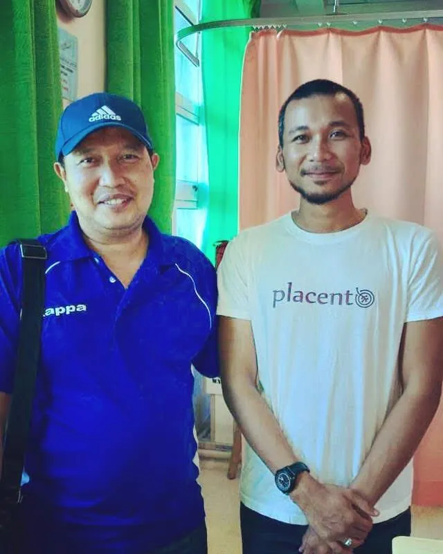

Awak nak bersedia. Tapi sekarang, terasa banyak sangat yang belum tahu.
Saya Basri. Sembilan tahun urus uri, lebih 5,000 keluarga. Tapi cerita ni mula di rumah, dengan emak saya.
Emak saya, Hajjah Rafeah, seorang bidan. Empat puluh tahun lebih dia sambut bayi, urus uri, sampai ke pagi. Saya besar dalam suasana itu. Lepas tu ke Al-Azhar, belajar pengajian Islam dan bahasa Arab.
Tapi ada satu peristiwa yang mengubah cara saya fikir. Anak pertama saya lahir dengan komplikasi jantung berlubang. Lapan bulan kami berkampung dalam wad. Dalam tempoh itu baru saya sedar: orang ramai datang sambut bayi, tapi jarang yang datang sambut ibu dan ayahnya.
Ambil ebook percuma dulu. Kalau ada apa-apa nak tanya, saya balas sendiri.
Ambil ebook percuma WhatsApp saya